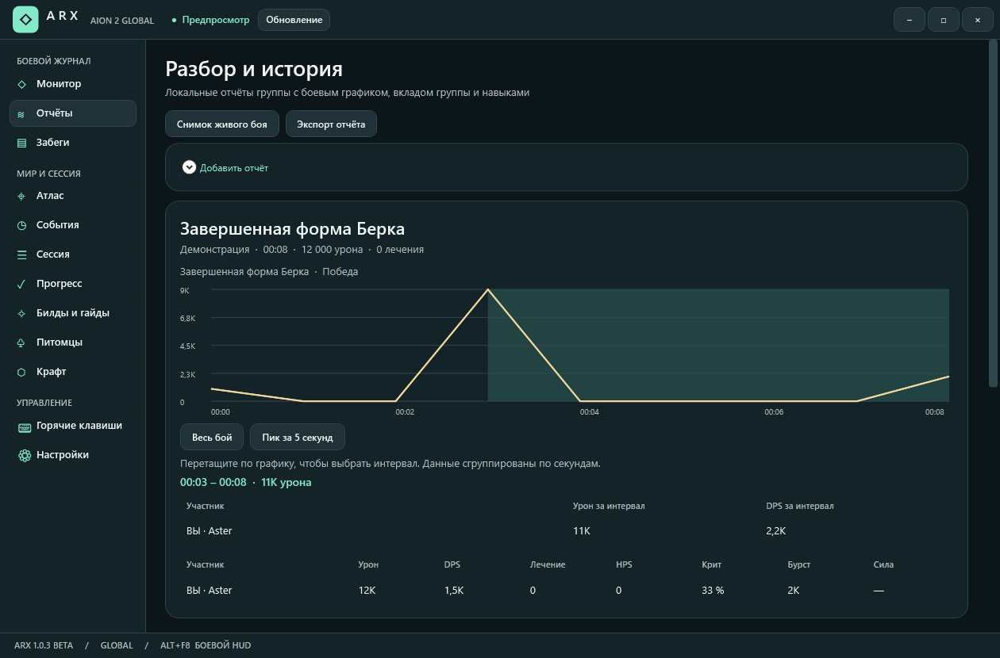
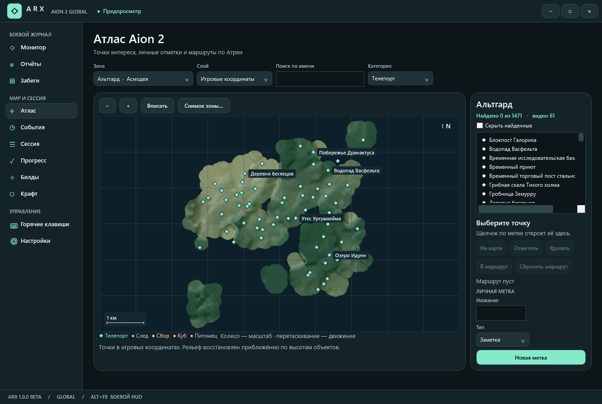
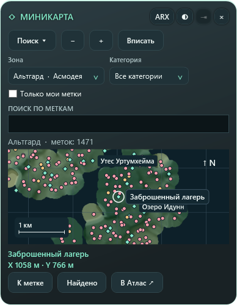
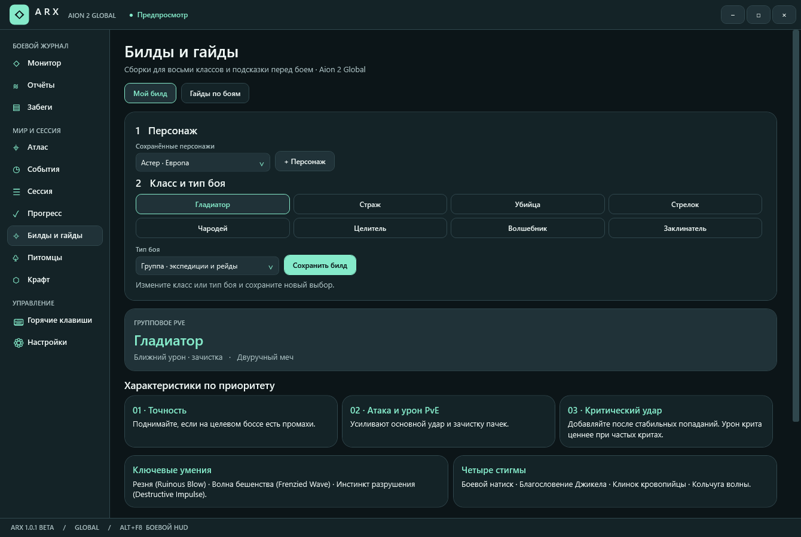

01 / MONITOR
DPS and combat overlay
View personal and party DPS, total damage, and each player’s contribution. Show your own stats or the entire party in the in-game overlay, and adjust its density and opacity.
AION 2 GLOBAL / EU · NA
Aion 2 Global companion
Track your DPS in combat, review boss attempts, and plan routes across Atreia.
ARX downloads on GitHub:
ARX RELEASES WINDOWS x64 GPL-3.0

FEATURES
01 / MONITOR
View personal and party DPS, total damage, and each player’s contribution. Show your own stats or the entire party in the in-game overlay, and adjust its density and opacity.
02 / REPORTS
Select a window on the combat chart or find your best five-second burst. The full report includes damage by skill, healing, HPS, critical hits, and back attacks.
03 / RUNS
ARX automatically tracks supported expeditions. Open individual attempts, compare average DPS across two runs, and export reports as JSON.
WORLD & SESSION



REFERENCE
FIRST LAUNCH
Requires 64-bit Windows. The installer includes .NET. For the portable version, extract the entire ZIP.
If Npcap is missing, the ARX installer offers to install it. Install it separately if you use the portable version. Start ARX before logging in with your character, or change zones if you are already in game.
Use borderless windowed mode. Press Alt + F8 for the combat overlay or Ctrl + Alt + F10 for the minimap.
ARX works without an account. Combat reports are stored in your local profile.
RELEASE HISTORY
ARX 1.0.4 BETA
ARX 1.0.3 BETA
USEFUL LINKS
Latest ARX release for Windows x64
ARX Community guide in Russian